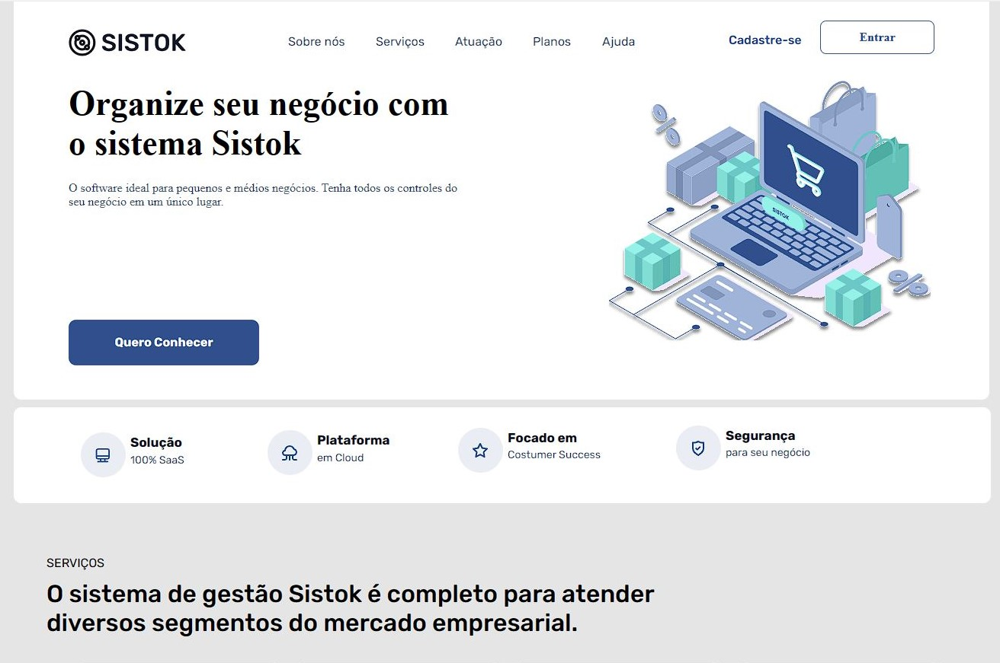
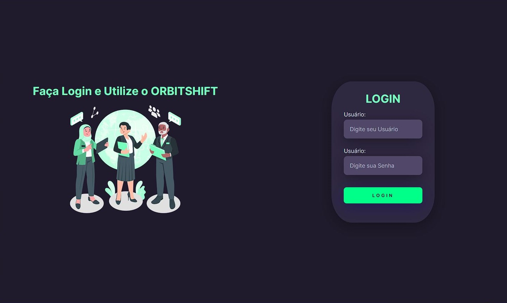

Sobre Mim
Vitor Diniz
👋 Me chamo Vitor Diniz. Prazer!
👨💻 Cursando Programador Front-End no Senai , Desenvolvendo interfaces
com HTML e CSS.
🎓 Graduado em Análise e Desenvolvimento de Sistemas e Redes de
Computador pela Unisuan no Rio de Janeiro.
💡 Interesses em desenvolvimento Front-end com HTML e CSS.
🚀 Tentando ser um pouquinho melhor do que ontem todos dias.
Projetos
Trailler Batman
Projeto Criado simulando a estrear do Filme do Batman , Assim dando
a interação com o Usuario para ver o trailler , e fazer a compra de
ingresso.

Clone Sistok
Projeto Criado Clonando a Pagina oficial do Sistok.

Obirtshift
Projeto Criado em Sala de Aula simulando um Login em uma pagina da empresa Obirtshift.

Clone Skambo
Projeto Criado Clonando a Pagina oficial do Skambo.

contato